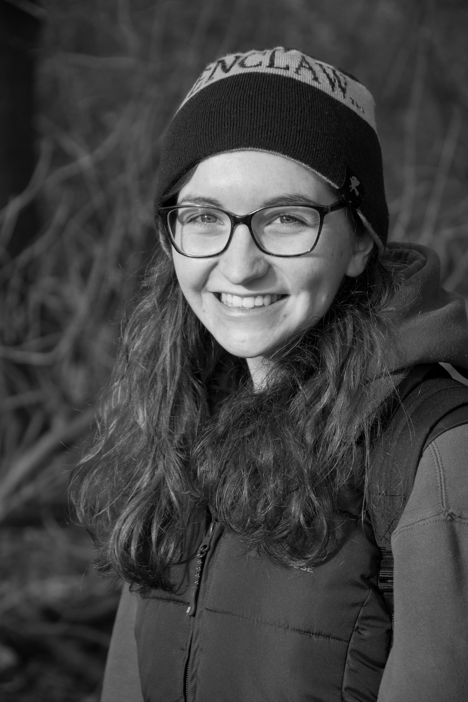

<div class="container-fluid">
    <div class="row">
        <div class="col col-12 col-lg-6 aboutPhoto">
            
        </div>
        <div class="col col-12 col-lg-6 aboutText">
            <div>
				<p>
					<b>Jennifer Linton</b> <br/> <br />
					I am a graduate from Falmouth University, where I studied Marine and Natural History Photography. It was truly a one in a million course, and I loved all the challenges and experiences it presented me with.  I focused mainly on the terrestrial side of the course, meaning I got to explore places all over Cornwall, experimenting with all the photographic and moving image techniques the course taught me.  <br /> <br />
					Since returning home to Hampshire, I am excited about the new challenges and adventures the next chapter of my life is presenting me with. <br /> <br />
					I am a self motivated, hard working individual who is dedicated to anything I do.  I have always had a passion for wildlife.  When I was younger I wanted to be a vet but decided I would never be able to euthanize an animal.  Therefore, I decided to focus my efforts on my love of photography and combine this with my devotion to wildlife.  Having experienced the moving image section of my course, I also developed an interest for this and it is something I am keen on pursuing.  Conservation and the protection of species is something I aim to contribute to through my work, helping to make a difference to the suffering creatures of the world. <br /> <br />
					My dream is to be able to travel the world doing what I love; photographing or filming its species, different environments and experiencing the cultures.  <br /> <br />
				</p>

				<p><b>Contact: </b><i><a href="mailto:stardustimagesjl@gmail.com?Subject=Enquiry">stardustimagesjl@gmail.com</a></i></p>
			</div> 
        </div>
    </div>
</div>
